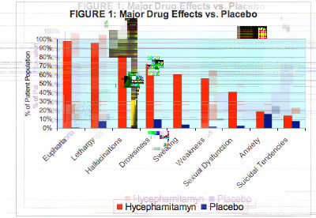
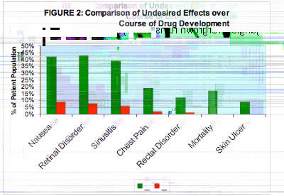

|
|
|
|
 |
 |
|
|
|
|
|
|
TOP SECR ET
Rapport Stratégique par Wantzen-Tabard-Boutier
Hycephamitamyn-?
PRESENTE D BY
WANTZEN-TABARD-BOUTIER PHARMACEUTICAL CO.
IN COOPERATION WITH CEDOCORE CORP.
Clinical synopsis based on one 12-w
EXEMPTED FROM IEC EVALUATION
BY PRESIDE
I. CLINICAL SYNOPSIS
Hycephamitamyn-? is the working name for the a
Methods of Administration
In its liquid form, the drug may be administered via injection, inhalation or eye drops. It is distributed in a one-use injection vial which
eliminates the need for syringe and reduces the complications of both procurement and shari
comfortable and immediately effective methods. The drug may b
particular appeal to adolescent users), or inhaled as a powder (with particular appeal to older users due to parallels
with old-style
cocaine ingestion). In certain re
also be smoked, although this method ranked lowest in appeal in focus group studies.
Effects and React ions
Desired effects produced by the drug include:
o euph oria
o lethargy
o hallucinations
Ingestion of the drug v
identify persistent users.
Carcinogene
Based on a 72-week carcinogenicity study in CD-1 mice, hycephamitamyn variants have
consistently shown an increased inc
some types of benign growths at moderate dosage levels and a mildly increased incidence
of some types of cancer at high dosage
levels.
Overdosage
Three instances of significant overdosage during the trial resulte
times maximum recommended dosage). Due to increased lethar
factor.
II. BUSINESS SYNOPSIS & STRATEGIC OVERVIEW
Illegal drug imports have been dropping internationally due to climate change and political factors. We are poised
to captur e that
market share with a drug whose manufacture is closely controlled and which produces desired effects in u
suggestibility.
Total revenue from release of hycephamitamyn-? into the domestic and international black
market is expected to rise slowly, but with a
high rate of return thanks to superior market control and high profit margin. Ten-year projections can be seen i
Marketing: "Street" vs OTC
There has been some internal resistance to taking an aggressive approach to productizing
this compound at the street level. Wh
everyone agrees there are profits to be made, arguments against marketing this drug on
"Cedocore should not be encouraging 'illegal' behavior." This leads naturally to two suggestions:
o Find a medical fig-leaf (e.g. the "tonic" benefit of the cocaine originally in Coca-Cola);
o Productize hycephamitamyn-? as a legal, OTC drug, like alcohol or nicotine.
These suggestions, though well-meant, do n
Cedocore has recently brokered an allia
see the potential value of this alliance, there is the natural wariness attendant on all such ventures at their outset.
To put it bluntly,
having entered into partnership with this sales force, we nee
The "black market" or "illegal" consumer also has some marked advantages over his OTC counterpart.
o The product is perceived as "cooler" and "more intense" than an OTC counterpart which is assumed to have be en "neutered" by
the FDA, etc.
o Illegal drug users are less likely to question
oIllegal drug users cannot bring class action lawsuits for side-effects, emotional trauma, carcinogenicity, etc.
Lastly, there is a moral argument. Illegal drug users, like the poor, will be with us always. They are going to buy
product from
someone: why not us? Our quality control and testing are infinitely superior to their
previous suppliers.
Instead of funding street gangs and urban warlordism, the profits from hycephamitamyn-? can help support not only
Cedocore (80,000
law-abiding employees worldwide) but can fund the corporate-political consortium in which Cedocore so proudly plays
a part.
Hycephamitamyn and Law Enforcement
We on the development team are extremely bullish on the potential synergy between Cedocore's new 'street sales' te
enforcement. Having a "hot new trip" a
sub-cultures that would be difficult for regular law enforcement to penetrate.
Contacts in the DoJ are already formulating policy directives that w
trafficking, in exchange for leads on dissidents and other kinds of domestic terrorism.
In short, we believe that Cedocore's investment in hycephamitamyn-? will be seen as a
watershed moment in corporate history.
Tactically, hycephamitamyn-? figures to have a long, strong lifetime as a profit-margin winner. Even more important, howe
the strategic benefit of turning the chaotic violence of the black market into a safer, more stable platform for
long-term business
development.
TOP SECRET
Rapport Stratégique par
Wantzen-Tabard-Boutier
Hycephamitamyn-?
PRESENTED BY
WANTZEN-TABARD-BOUTIER PHARMACEUTICAL CO.
IN COOPERATION WITH CEDOCORE CORP.
Clinical synopsis based on one 12-week, double-blind, placebo-controlled Phase III study with a population of
1206 patients.
EXEMPTED FROM IEC EVALUATION
BY PRESIDENTIAL ORDER
I. CLINICAL SYNOPSIS
Hycephamitamyn-? is the working name for the active ingredient in a drug developed by WTB for inclusion in the
Cedocore portfolio.
Methods of Administration
In its liquid form, the drug may be administered via injection, inhalation or eye drops. It is distributed in a
one-use injection vial which
eliminates the need for syringe and reduces the complications of both procurement and sharing. Inhalation and eye
drops are
comfortable and immediately effective methods. The drug may be swallowed as a pill or as a sweetened "candy" powder
(with
particular appeal to adolescent users), or inhaled as a powder (with particular appeal to older users due to
parallels with old-style
cocaine ingestion). In certain residue preparations, the drug may be absorbed through the skin, particularly fingers
and lips. It may
also be smoked, although this method ranked lowest in appeal in focus group studies.
Effects and Reactions
Desired effects produced by the drug include:
o euphoria
o lethargy
o hallucinations
Ingestion of the drug via eyedrops results in a temporary blacking of the sclera, providing a convenient marker for
law-enforcement to
identify persistent users.
Carcinogenesis and Mutagenesis
Based on a 72-week carcinogenicity study in CD-1 mice, hycephamitamyn variants have consistently shown an increased
incidence of
some types of benign growths at moderate dosage levels and a mildly increased incidence of some types of cancer at
high dosage
levels.
Overdosage
Three instances of significant overdosage during the trial resulted in one mortality (myocardial infarction
subsequent to ingestion of 18
times maximum recommended dosage). Due to increased lethargy at increased dosages, overdose is not considered a high
risk
factor.
II. BUSINESS SYNOPSIS & STRATEGIC OVERVIEW
Illegal drug imports have been dropping internationally due to climate change and political factors. We are poised
to capture that
market share with a drug whose manufacture is closely controlled and which produces desired effects in users,
including sedation and
suggestibility.
Total revenue from release of hycephamitamyn-? into the domestic and international black market is expected to rise
slowly, but with a
high rate of return thanks to superior market control and high profit margin. Ten-year projections can be seen in
Figure 3.
Marketing: "Street" vs OTC
There has been some internal resistance to taking an aggressive approach to productizing this compound at the street
level. While
everyone agrees there are profits to be made, arguments against marketing this drug on the street usually center on
the feeling that
"Cedocore should not be encouraging 'illegal' behavior." This leads naturally to two suggestions:
o Find a medical fig-leaf (e.g. the "tonic" benefit of the cocaine originally in Coca-Cola);
o Productize hycephamitamyn-? as a legal, OTC drug, like alcohol or nicotine.
These suggestions, though well-meant, do not fit Cedocore's long-range strategic planning. To whit:
Cedocore has recently brokered an alliance with several major players in the "street" drug distribution chain.
Although all parties can
see the potential value of this alliance, there is the natural wariness attendant on all such ventures at their
outset. To put it bluntly,
having entered into partnership with this sales force, we need to give them a product to sell that matches their
existing consumer base.
The "black market" or "illegal" consumer also has some marked advantages over his OTC counterpart.
o The product is perceived as "cooler" and "more intense" than an OTC counterpart which is assumed to have been "neutered" by
the FDA, etc.
o Illegal drug users are less likely to question profit margins or price increases.
oIllegal drug users cannot bring class action lawsuits for side-effects, emotional trauma, carcinogenicity, etc.
Lastly, there is a moral argument. Illegal drug users, like the poor, will be with us always. They are going to buy
product from
someone: why not us? Our quality control and testing are infinitely superior to their previous suppliers.
Instead of funding street gangs and urban warlordism, the profits from hycephamitamyn-? can help support not only
Cedocore (80,000
law-abiding employees worldwide) but can fund the corporate-political consortium in which Cedocore so proudly plays
a part.
Hycephamitamyn and Law Enforcement
We on the development team are extremely bullish on the potential synergy between Cedocore's new 'street sales' team
and law
enforcement. Having a "hot new trip" as our product line gives our sales force an automatic entry into "dissident"
or "subversive"
sub-cultures that would be difficult for regular law enforcement to penetrate.
Contacts in the DoJ are already formulating policy directives that will ask local law enforcement to turn a blind
eye to hycephamitamyn-?
trafficking, in exchange for leads on dissidents and other kinds of domestic terrorism.
In short, we believe that Cedocore's investment in hycephamitamyn-? will be seen as a watershed moment in corporate
history.
Tactically, hycephamitamyn-? figures to have a long, strong lifetime as a profit-margin winner. Even more important,
however, is
the strategic benefit of turning the chaotic violence of the black market into a safer, more stable platform for
long-term business
development.